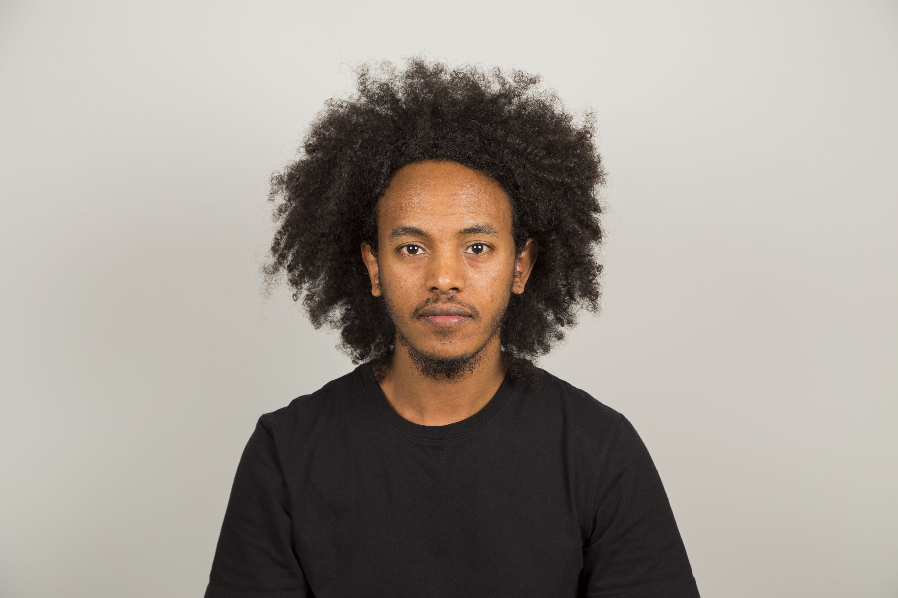
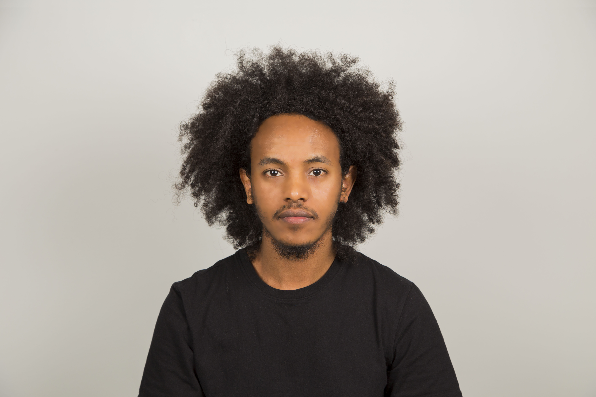
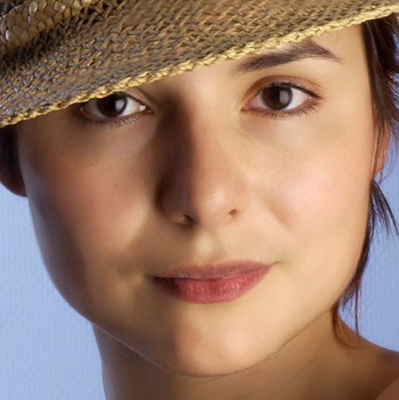
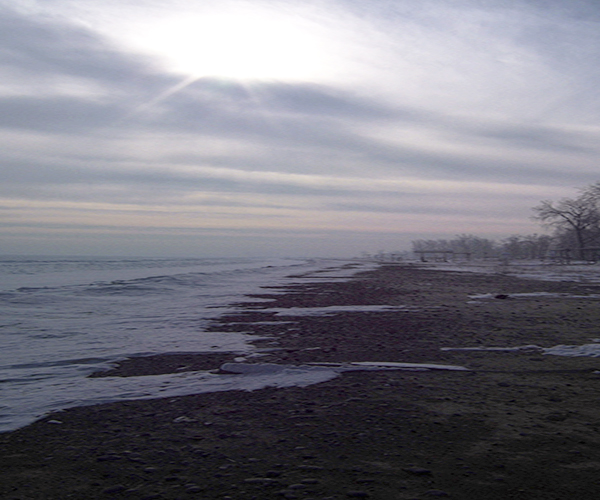
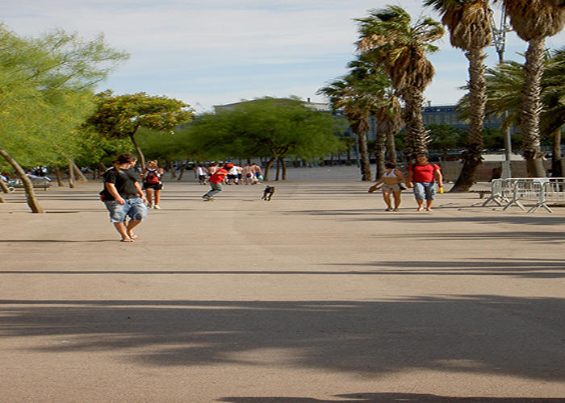
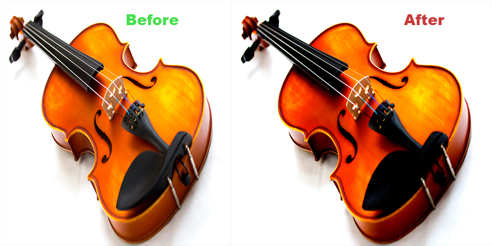
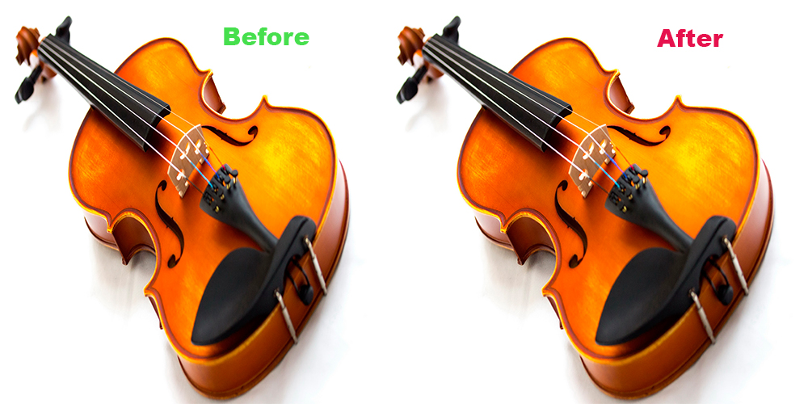
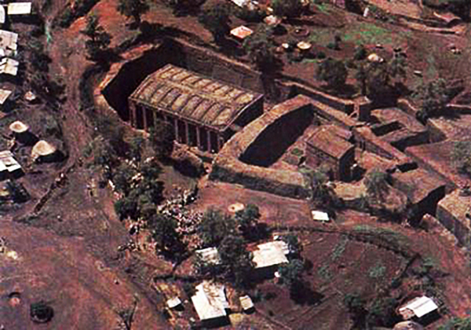

Portrait and Assignment 5
Portrait before

Portrait After

Another Portrait

Underexposed Image

Noise Removal

High Radius/Low Amount

High Radius/ Low amount sharpening is yet another method used to give an image an extra boost on its sharpness by adding an enormous visual impact. On photoshop it can be found on the filter menu, represented by Unsharp mask. The amount sets how sharp the picture is going to be, the radius get rid of the halos from the edges of the image and gives it a significant contrast boost. The Threshold setting is an amount representing the difference between pixels on the edges that you want to effect. It works the opposite way – a small value gives the image much more impact than a large value.
Low Radius/High Amount

Amount value and a low Radius value for the Unsharp Mask filter barely sharpened the image. The Radius and the amount works interdependently; so if the if the radius is lowered then the amount needs to be increased. Chose the lowest radius for this one and the maximum for the radius. A low radius means only the pixels right next to the edge will be sharpened.
Without Highpass
Using Highpass
